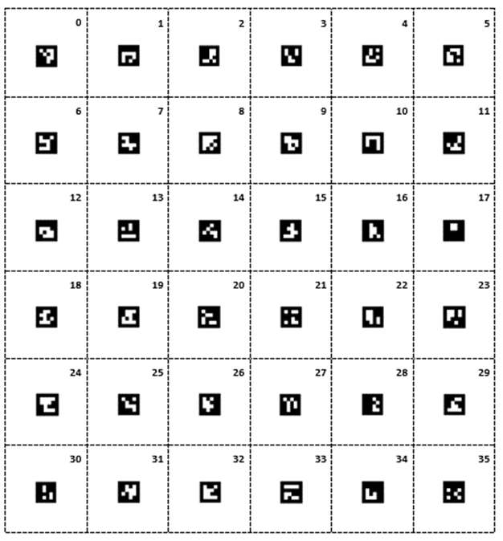
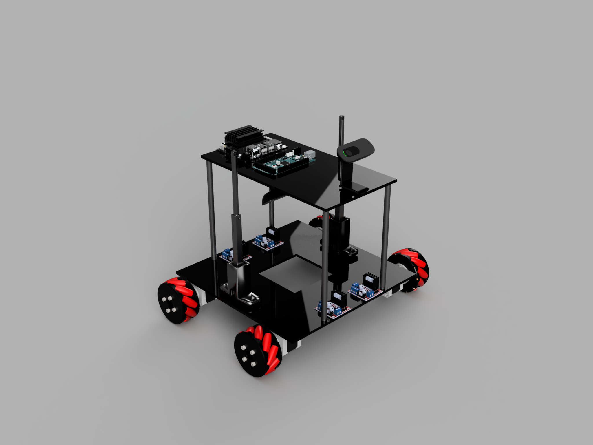

GNUS - Grid-Based Navigation Utilization System
The objective of this system is to optimize indoor navigation capabilities by utilizing a square grid of ArUco Markers.

Figure 1 - Grid of ArUco Markers

Figure 2 - CAD Model of GNUS Robot
Video of GNUS Robot Operating
Video of GNUS Robot Operating With Rotation